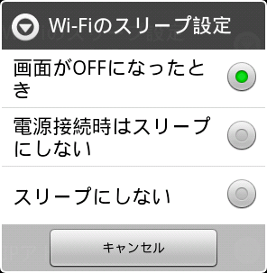

| ISO-2022-JP |
もっとも一般的な選択です。
ただし、AiCiAではこのコードでは「JIS半角カナ文字」が適切に表示されません。
|
| ISO-2022-JP_with_halfkana |
「JIS半角カナ文字」を適切に表示したい場合は、このコードを選択します。
いくつかの内部処理が加わるために表示が多少遅くなったり、日本語以外の文字が適切に表示されない可能性があります。
|
| UTF-8 |
表示できる文字の種類は最も多くなりますが、このコードを採用しているIRCチャンネルはあまり多くありません。
|
半角カナ文字を送信しようとすると、全角に変換されてしまいます。
「環境設定:入力エリア」で、[JIS半角カナを送信する]をONにします。
サブログウィンドウのチャンネル名の先頭に表示される"1a"などの文字は何ですか？
"2a"の部分がショートカット
チャンネル名の先頭に表示されている文字列は、「チャンネルショートカット」です。[Ch]ボタンをタップして、メニューが表示された後にチャンネルショートカット文字列を入力すると、そのチャンネルへジャンプすることができます。
これ以外のメニューでも、"123"などの数字や"abc"などのアルファベットが項目の先頭に付いている場合、そのキーを入力することで各項目にジャンプすることができます。
"Low Memory"が通知されました。どうすればよいですか？
"Low Memory"通知が表示されたときにしなければならないことは、特にありません。必要なのは、"Low Memory"通知が表示されないように端末を扱うことです。
AiCiAは、内部的には２つのパートに分かれています。画面表示を行うときだけメモリに存在するUI部分と、常駐してIRC通信を行うサービス部分です。これらは個別に起動し、互いに通信しながら動作しています。
"Low Memory"通知は、「メモリ不足のため、IRC通信を行うサービス部分を強制終了させる可能性がある」という警告がOS側より送られた場合に表示されます。
サービス部分が強制終了させられてしまうと、IRC通信が切断され、それまでのログが消去されてしまいます。
「"Low Memory"通知が表示されないように扱う」には、以下のような手段があります。
- メモリの多い端末を使う。
- 国内機種でメインメモリが256MB程度の端末では、"Low Memory"通知の発生確率はかなり高いようです。
- 多くのアプリを起動しない。
- アプリは起動されるごとにメモリを消費します。アプリを多く起動しないことが、メモリ不足を起こさない最も簡単な方法です。
- 不要なアプリを終了させる。
- アプリは、バックグラウンドに回っただけでは終了しません。確実に終了させるには、タスクマネージャなどのアプリを使用するのが最も簡単です。
- 利用度の低いウィジェットを使用しない。
- ウィジェットは常駐するため、メモリが不足気味になったときにいつでも終了させられる通常アプリよりもメモリを圧迫します。
IS01など、「Android OSの起動が完了した時点ですでにアプリ１～２本分しかメモリが残っていない」機種が、現時点のAndroid端末には少なからずあります。このような機種では、AiCiAで表示されたURLをタップしてブラウザを開くだけでも、"Low Memory"通知が表示されてしまうことがあります。
Wi-Fi接続中、端末がスリープに入るとIRC接続が切れてしまいます。

Wi-Fiのスリープ設定
設定メニューから、[通信]-[Wi-Fi設定]を選び、その後[MENU]ボタンをタップすると、[詳細設定]メニューが現れます。
[Wi-Fiのスリープ設定]を選び、[スリープにしない]を選ぶと、端末がスリープに入ってもWi-Fiはスリープに入らなくなるため、IRC接続が維持されるようになります。
バッテリー動作中で、スリープ状態に入ったときに通信経路が切断されると、端末が省電力モードに入って自動再接続タイマーが動作しなくなるため、再接続を行うことができなくなります。現時点ではこれを回避できません。